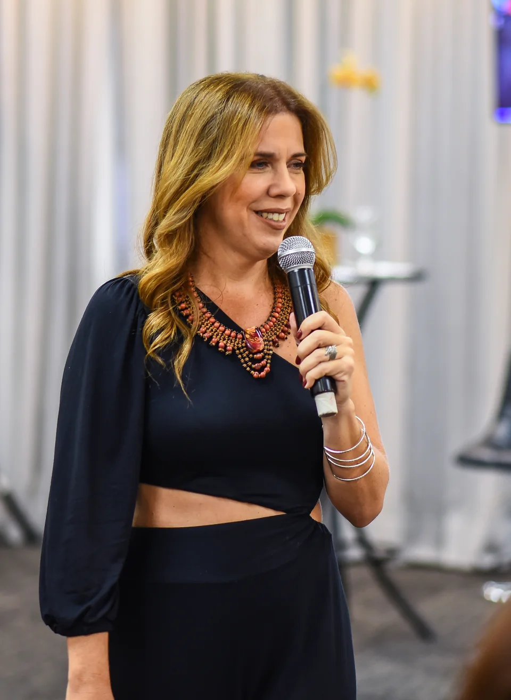
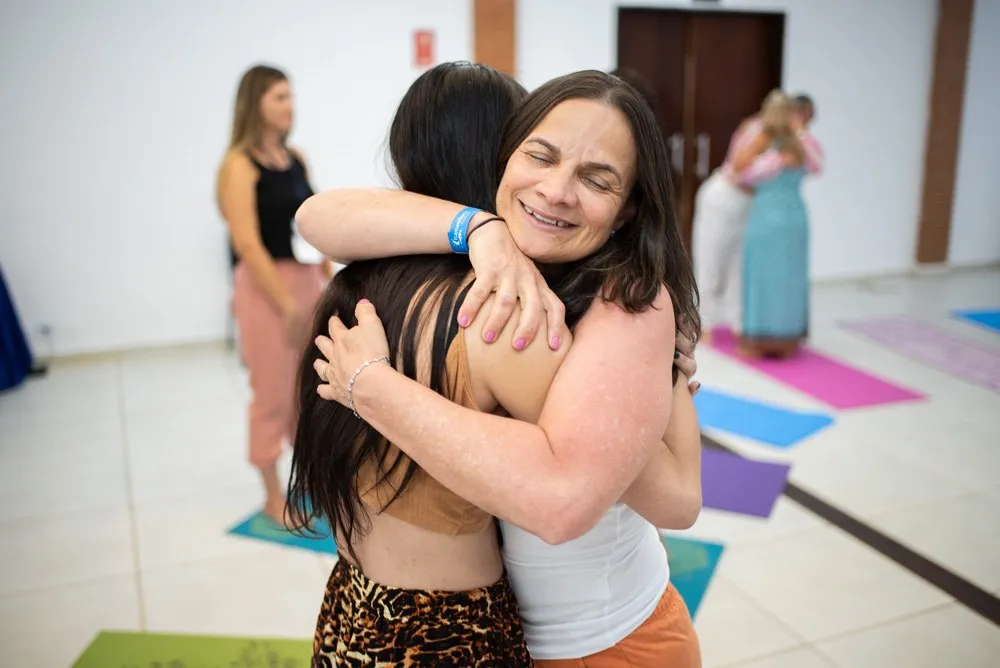
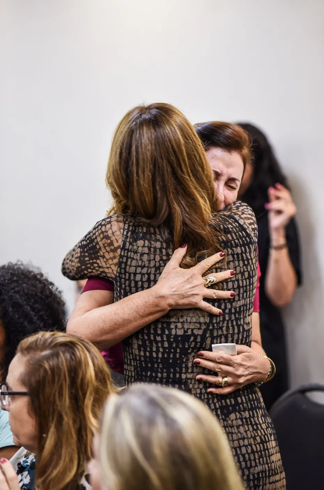
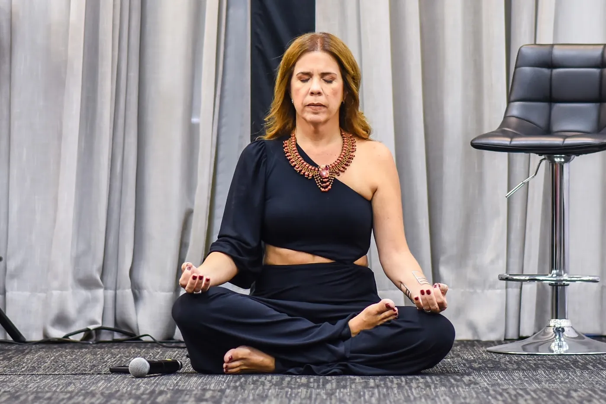
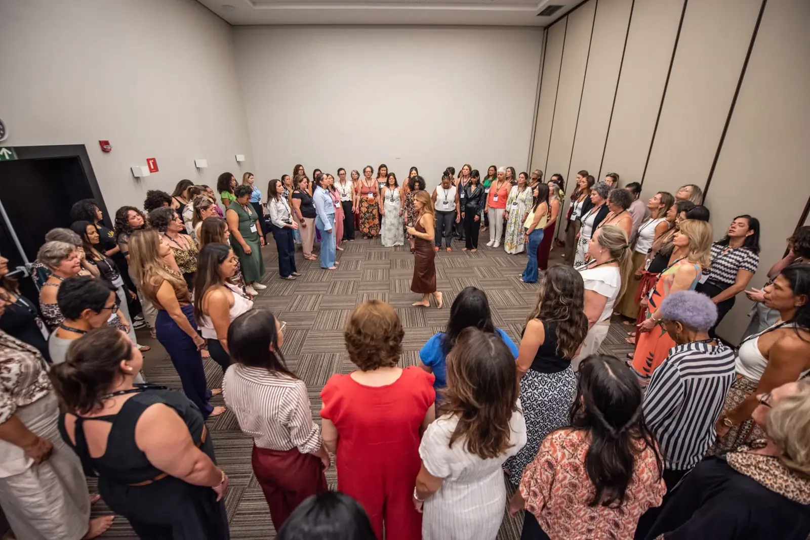

Grupo de Coaching Sistêmico com a Anna Patrícia Chagas
Seu renascimento em 120 dias
Um grupo pequeno, guiado pela Anna Patrícia, para você descobrir o seu propósito, curar padrões familiares, fazer a transição que deseja e cocriar a sua realidade para 2027.
- Grupo pequeno
- Encontros quinzenais
- Vagas por aplicação
Aplicar é preencher um formulário curto para a equipe conhecer você.

por grupo
Comece por aqui
Assista ao vídeo da Anna

Talvez seja você
Você se reconhece em alguma destas frases?
- Sinto que vivo para todo mundo menos para mim.
- Já me senti perdida.
- Carrego muita coisa e quase não sobra espaço para o que eu quero.
- Percebo padrões que se repetem e não sei por onde começar a mudar.
Se alguma frase te tocou, este grupo pode ser um lugar para você olhar para isso com companhia.

O que acontece depois
Por que é difícil sustentar a própria mudança
Muitas mulheres começam uma mudança com vontade de verdade. E depois encontram o mesmo cenário de antes.
- A rotina e as cobranças continuam as mesmas.
- Falta alguém que acompanhe o processo de perto.
- Faltam outras mulheres que estejam no mesmo caminho.
- Faltam passos práticos para aplicar no dia a dia.
- Em volta, algumas pessoas esperam que você volte ao que era.
Isso não é falta de força de vontade. Mudar sozinha é mais difícil. É por isso que existe um grupo.
O seu renascimento
E se em 120 dias você pudesse:
- 01
Descobrir o que está te paralisando
Identifique e supere os bloqueios que impedem seu crescimento
- 02
Resgatar sua essência original
Reconecte-se com quem você realmente é, sem máscaras
- 03
Curar padrões familiares limitantes
Quebre ciclos geracionais que te mantêm presa
- 04
Criar relacionamentos saudáveis
Desenvolva conexões autênticas e nutritivas
- 05
Viver com propósito claro
Encontre sua missão de vida e viva com direção
- 06
Fazer a transição desejada
Implemente as mudanças que você sempre sonhou
- 07
Prosperar financeiramente
Desenvolva uma mentalidade abundante e próspera
- 08
Descobrir seu propósito
Encontre sua razão de ser e viva com significado
O grupo
O que é o Grupo Renascer
O Grupo Renascer é um grupo pequeno de Coaching Sistêmico, conduzido pela Anna Patrícia Chagas.
- 120 dias de acompanhamento direto com a Anna
- Encontros quinzenais
- Um grupo pequeno de mulheres no mesmo processo
- Ferramentas práticas de desenvolvimento feminino para aplicar na sua vida
Não é mais um curso. É um espaço para aplicar na vida o que você já sente que precisa mudar.
Coaching Sistêmico é um processo de desenvolvimento. Não substitui terapia nem tratamento de saúde.





Simples assim
Como funciona a aplicação
Três passos simples:
- 1Você preenche um formulário curto (cerca de 5 minutos).
- 2A equipe lê com atenção e fala com você em até 72 horas.
- 3Se houver encaixe, vocês conversam para tirar dúvidas. A decisão é sua.
Quem conduz
Anna Patrícia Chagas
Psicóloga, com mais de 25 anos de experiência. Conduz o Instituto Ipê Amarelo, que já formou mais de 2.700 mulheres líderes em 30 países.
Antes de aplicar
Para quem é o Grupo Renascer
É para você se:
- Quer acompanhamento em grupo durante 120 dias.
- Pode participar dos encontros a cada 15 dias.
- Está disposta a colocar em prática o que descobre.
Não é para você se:
- Procura uma solução rápida.
- Não consegue estar nos encontros.
- Está num momento muito difícil e precisa de tratamento de saúde. Neste caso, procure um profissional de saúde. Cuidar de você vem primeiro.
Dúvidas
Perguntas frequentes
Quando começa?
No início de janeiro.
Como são os encontros?
Quinzenais, durante 120 dias.
Quantas vagas?
10 mulheres por grupo.
O que é Coaching Sistêmico?
É um processo de desenvolvimento em grupo, conduzido pela Anna. Não substitui terapia nem tratamento de saúde.
Quanto custa?
O investimento é apresentado na conversa com a equipe.
Quanto tempo leva a resposta?
Em até 72 horas a equipe fala com você.
Aplicação
Conte um pouco da sua história
Leva cerca de 5 minutos. Suas respostas são lidas por pessoas da equipe.
Ao enviar, você concorda que o Instituto Ipê Amarelo use as suas respostas só para analisar a sua aplicação e falar com você sobre o Grupo Renascer. Seus dados não são vendidos nem compartilhados.
Você chegou até aqui. Isso já diz algo sobre o que você procura.
Preencha o formulário e a equipe responde você.